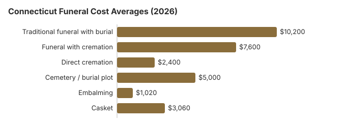

How Much Does a Funeral Cost in CT: What Families Pay in 2026
A Connecticut funeral is rarely a single bill. This guide pulls the pieces apart: the $10,200 traditional service average, the $2,400 direct cremation option, and what the gap between them actually buys in Connecticut.
What a Funeral Costs in Connecticut, Item by Item
The following table provides a detailed breakdown of typical Connecticut funeral expenses. In most cases, a full funeral in the state falls between $7,600 and $10,200, depending on the choices you make. Individual prices in Connecticut still vary by provider, and the CT Dept. of Public Health licenses Connecticut homes without setting their prices.
Basic services fees at funeral homes often run $1,500–$3,000, and facility rental for a viewing or ceremony commonly adds $400–$800, so using a funeral cost calculator to compare itemized prices can help you understand where your money is going.
| Service | Average Cost | Range |
|---|---|---|
| Traditional funeral with burial | $10,200 | $7,650 – $13,260 |
| Funeral with cremation | $7,600 | $6,080 – $9,880 |
| Direct cremation | $2,400 | $1,680 – $3,360 |
| Cemetery / burial plot | $5,000 | $2,500 – $10,000 |
| Embalming | $1,020 | $500 – $1,500 |
| Casket | $3,060 | $1,020 – $8,160 |
Methodology note: These figures are our estimates, not a survey of local providers, and they are not a quote or professional advice. See how we calculate them or read the full disclaimer.
State sources: Connecticut Department of Public Health; Connecticut DSS.

Our Connecticut estimate puts a typical casket at about $3,060, inside a $1,020 to $8,160 range, though premium hardwood and bronze models can pass $10,000. A Connecticut burial plot runs about $2,500 to $10,000 around a $5,000 average, and opening and closing the grave adds roughly $500 to $3,000, about $2,500 in our estimate.
Funeral Prices Across Connecticut Cities
Funeral costs vary across Connecticut's major metropolitan areas. Here are the major cities in Connecticut:
What Pushes a Connecticut Funeral Bill Up or Down
Funeral costs in Connecticut are influenced by several factors. Prices can also differ sharply from one provider to another because there is no standardization in how services are priced.
The cost of living in Connecticut, local competition among funeral providers, state regulations, cultural traditions, and real estate prices all play a role in determining what families pay. The cremation rate of 52% in Connecticut also affects the market: areas with higher cremation rates often see more competitive pricing for cremation services.
Quoted prices in Connecticut rarely include every charge, and some add-ons come through third-party cash advances that raise the final bill.
- Be wary of an embalming charge presented as required: in Connecticut it almost never is.
- Outer burial container surcharge: Many Connecticut cemeteries require an outer burial container, such as a grave liner or vault, which can add $500–$2,000+
- "Package" markups: Bundled packages often include services you don't need; under the FTC Funeral Rule a Connecticut funeral home must also price each item separately.
Choosing burial instead of cremation usually raises total funeral expenses because of cemetery, container, and related charges.
Detailed Connecticut Funeral Home Cost Guides
For deeper analysis on specific disposition types in Connecticut, see our dedicated guides:
Cremation Costs in Connecticut
Complete guide to cremation pricing in Connecticut including direct cremation from $2,400, cremation with service from $7,600, urn options, scattering regulations, and memorial alternatives. The cremation rate in Connecticut is 52%.
Burial Costs in Connecticut
Detailed breakdown of burial expenses in Connecticut including cemetery plots from $5,000, caskets, vaults, headstones, and opening/closing fees. Total burial costs in Connecticut range from $23,260 to $27,760.
Rights Every Funeral Buyer Has in Connecticut
If you believe a funeral home in Connecticut has violated these rights, you can file a complaint with the FTC at ftc.gov or contact the Funeral Consumers Alliance for guidance.
What's Specific to Connecticut (Northeast)
Connecticut has one of the highest funeral-home densities in the country, which usually helps consumers: more providers means more pricing competition. However, ownership consolidation by Service Corporation International (SCI) and similar groups has concentrated some of the Hartford market under a handful of brands. Ask each Connecticut provider whether they are independently owned; independent operators in Connecticut often undercut branded ones by 10-25%.
Cremation vs. Burial in Connecticut
Direct Cremation
- Direct cremation from $2,400, with cremation services offered by the funeral home or crematory
- Cremation with service from $7,600; families often choose this for a loved one when they want more time for a memorial without burial timelines
- No cemetery plot required
- More flexible memorial options
- Current rate: 52% of families
Traditional Burial
- Traditional service from $10,200
- Cemetery plot from $5,000; some families also consider a natural burial to avoid embalming and use simpler containers
- A burial vault is commonly required by cemeteries for a traditional burial
- Permanent memorial location and a place to bury a loved one
- Metal casket: about $2,500 national median (NFDA 2023 General Price List Study); Connecticut prices vary by seller
Help Paying for a Funeral in Connecticut
- Connecticut's DSS allowance tops out at $1,800, and family contributions above $3,400 reduce it, so tell DSS what relatives are putting in before the bill is finalized.
- The $255 Social Security death payment goes only to an eligible surviving spouse or child; in Connecticut, as elsewhere, they apply by calling 1-800-772-1213 within two years of the death.
- VA reimburses part of a Connecticut veteran's funeral through Form 21P-530EZ, filed by whoever paid; deaths not connected to service on or after October 1, 2026 qualify for up to $1,032 for burial and $1,032 for the plot, as our veteran burial benefits guide explains.
- More options for Connecticut families, including Medicaid and charity help, are in our funeral payment assistance guide and how to pay for a funeral with no money.
In Connecticut, an irrevocable funeral contract cannot be cancelled for a refund, so compare its price with the funeral home's General Price List before signing; the Medicaid limit for these contracts is covered in the state rules below.
A family member should gather documents and apply for available help as early as possible. Check deadlines carefully, because some assistance applications must be filed within one year of the date of death.
For a complete overview of all financial assistance options, see our guide to paying for a funeral with no money.
Educational Resources
- Funeral Consumers AllianceIndependent nonprofit consumer advocacy for funeral rights
- FTC Funeral RuleThe federal rule protecting funeral consumers
- Funeral Insurance GuideCompare final expense and burial insurance options
- Best Burial Insurance CompaniesSide-by-side comparison of top burial insurance providers
- Payment Assistance GuideGovernment programs and financial help for funeral costs
- Insurance Plan ComparisonCompare coverage, premiums, and payout speed across providers
Compare Funeral Costs
- Average Funeral Cost in 2026National cost breakdown with real prices
- Cremation vs. Burial Cost ComparisonSide-by-side price comparison to help you decide
- Funeral Cost BreakdownEvery line item explained: know what you're paying for
- Cheapest Funeral OptionsLower-cost alternatives, with typical price ranges
- Direct Cremation: Most Affordable OptionNFDA 2023 median $2,645 with a family-supplied container (latest available)
- How to Compare Funeral PricesStep-by-step guide to getting the best price
Lower-Cost Funeral Choices in Connecticut
| Option | Estimated Cost | What's Included |
|---|---|---|
| Direct cremation | $1,680–$3,360 | Cremation with no viewing or service; Connecticut requires a 48-hour wait first (Conn. Gen. Stat. § 19a-323). |
| Direct burial | $5,100 | Burial soon after death without embalming or viewing; the Connecticut cemetery charges for the plot and opening separately. |
| Green burial | $5,610 | Biodegradable container, no embalming: eco-friendly and affordable. |
| Cremation + memorial | $7,100–$7,600 | Cremation followed by a separate memorial service |
| Traditional funeral | $10,200 | Full service with viewing, ceremony, and burial |
For more strategies, see our guides on affordable funeral options, how to pay for a funeral with no money, and what families should know when planning a funeral without insurance.
Planning a Funeral in Connecticut: Where to Start
Families arranging a funeral in Connecticut for the first time often move faster than they need to. The following sequence slows things down just enough to compare options without adding undue delay during an emotional time:
- Ask the funeral director for the general price list, death certificate filing costs, and how many certified copy requests will be needed.
- Decide on disposition: cremation in Connecticut or burial in Connecticut. This is the single biggest cost decision, and if you plan to bury the deceased, confirm cemetery rules on plots and required containers before committing.
Funeral rules and help in Connecticut
The Connecticut Department of Public Health licenses funeral directors and establishments in Connecticut; call 860-509-7603 to check a license or file a complaint.
Connecticut is one of nine states where a licensed funeral director must be involved in some steps: filing the death certificate, moving the body, and obtaining the disposition permit (Conn. Gen. Stat. §§ 7-62b, 7-65a, 7-69, as summarized by Funeral Consumers Alliance). A Connecticut family can still do the rest of a funeral itself, such as washing and dressing the body or holding the service at home.
If the family chooses cremation, Connecticut requires a 48-hour wait before cremation (Conn. Gen. Stat. § 19a-323).
The Connecticut Department of Social Services funeral and burial allowance pays up to $1,800; contributions over $3,400 reduce it, and you must apply within one year. Medicaid applicants may set aside up to $10,000 in an irrevocable funeral contract (Conn. Gen. Stat. § 42-207). (Source: Connecticut DSS.)
Connecticut's state-run veterans cemetery, Connecticut State Veterans Cemetery (860-616-3688), takes requests directly, and the VA supplies the veteran's headstone or marker there at no charge. That state cemetery is in Middletown.
Next steps for a funeral in Connecticut
- Get written price lists from at least two Connecticut funeral homes before you agree to anything.
- Consider a Connecticut memorial service after cremation or burial, which avoids embalming and viewing fees.
- File the Connecticut DSS funeral and burial allowance claim within one year of the death, and tell DSS about any family contributions.
- For a veteran, price Connecticut State Veterans Cemetery against a private Connecticut plot before choosing.
- Keep the board's number, 860-509-7603, in case a funeral home will not honor its price list.
Frequently Asked Questions
What is the average price of a funeral in Connecticut right now?
Current averages in Connecticut come in at $10,200 for a traditional funeral, $7,600 for cremation with a service, and from $2,400 for direct cremation, with the traditional figure sitting 23% above the $8,300 US median. This article breaks down the main charges families should compare. Cemetery and burial fees add roughly $5,000 when a Connecticut family chooses burial.
Is cremation cheaper than burial in Connecticut?
In Connecticut, direct cremation at $2,400 costs about $7,800 less than the $10,200 traditional funeral, and roughly $12,800 less once about $5,000 in cemetery costs is added. The Northeast has a higher concentration of funeral homes per capita, which can give families more options for comparison shopping.
What rights do Connecticut families have when arranging a funeral?
The federal FTC Funeral Rule gives Connecticut families the right to an itemized price list, to prices over the phone, and to buy only the goods and services they want. Connecticut law requires a licensed funeral director for filing the death certificate, moving the body, and obtaining the disposition permit (Conn. Gen. Stat. §§ 7-62b, 7-65a, 7-69, per the Funeral Consumers Alliance). You can confirm a Connecticut license or file a complaint with the Connecticut Department of Public Health at 860-509-7603.
How do I keep funeral costs down in Connecticut?
Three moves cut the most: compare at least three Connecticut General Price Lists side by side before choosing a provider, strip packages down to only the services you actually want, and choose direct cremation ($2,400) if cost is the priority. Ask cemeteries about winter (frozen-ground) charges if the death is between December and March; Connecticut cemeteries often charge extra in winter. Municipal, Catholic, and Jewish cemeteries in Connecticut generally price below private memorial parks by $1,000 or more.
Does Connecticut require embalming?
Not in most situations. Connecticut's rule is narrower: a body shipped by common carrier must be washed or embalmed and then cased, unless that is contrary to the deceased person's religious beliefs or customs (Conn. Gen. Stat. § 19a-91(b)(1)). After a death from a reportable disease, the body must be washed, embalmed or wrapped, so wrapping meets the rule without embalming (§ 19a-91(c)).
Connecticut's 48-hour wait before cremation does not trigger embalming either; refrigeration covers it. NFDA's 2023 national median for embalming was $845, and a Connecticut funeral home must show its own price on its General Price List. The Department of Public Health (860-509-7603) licenses embalmers and funeral homes.
Is Connecticut cheaper or more expensive than the US average for funerals?
Compare the Connecticut figures in the cost table on this page with the national median of $8,300 for a funeral with viewing and burial, or $6,280 with cremation (NFDA 2023). Individual Connecticut funeral homes can sit well above or below the state figure, so get several price lists.
Which funeral option costs the least in Connecticut?
Direct cremation carries the lowest price tag in Connecticut, from roughly $2,400. Direct burial is the next step up at about $5,100, which is $5,100 below a traditional Connecticut funeral.
How can I find affordable funeral homes in Connecticut?
Ask at least three Connecticut providers for their General Price Lists and compare direct cremation and immediate burial lines. Buying the casket or urn elsewhere is allowed under the FTC Funeral Rule, and the Connecticut home cannot charge a fee for it.